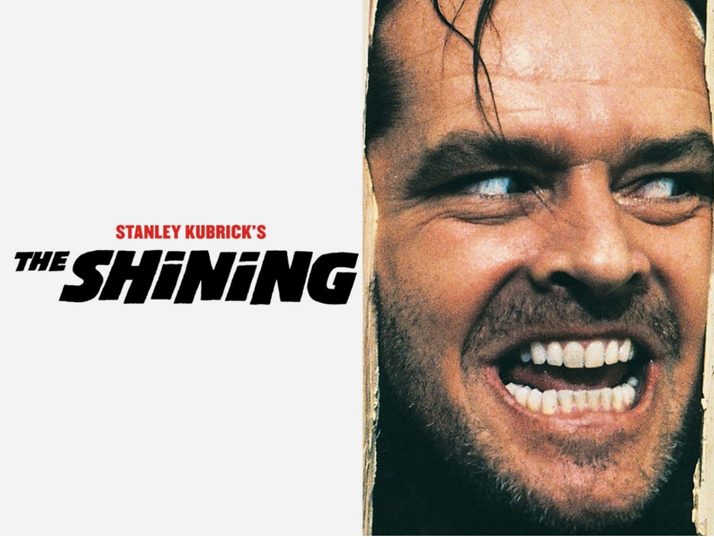
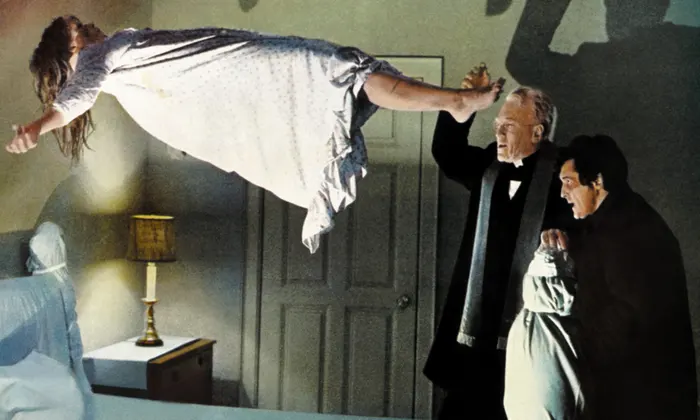
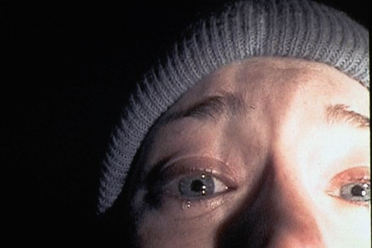
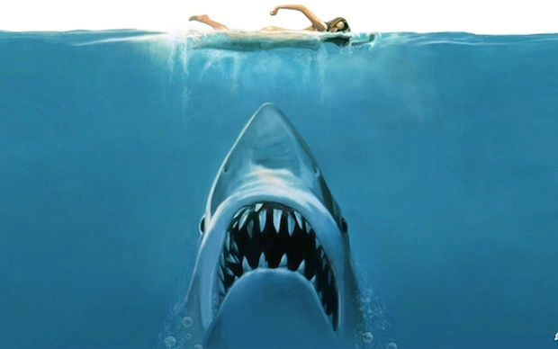
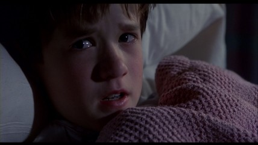
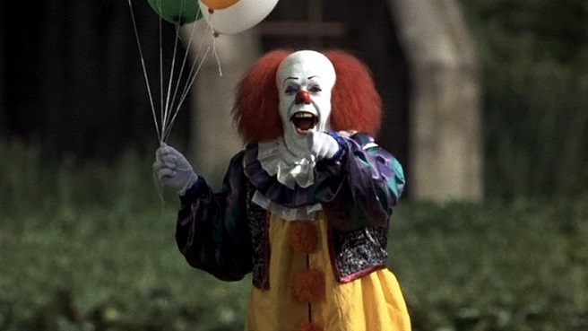
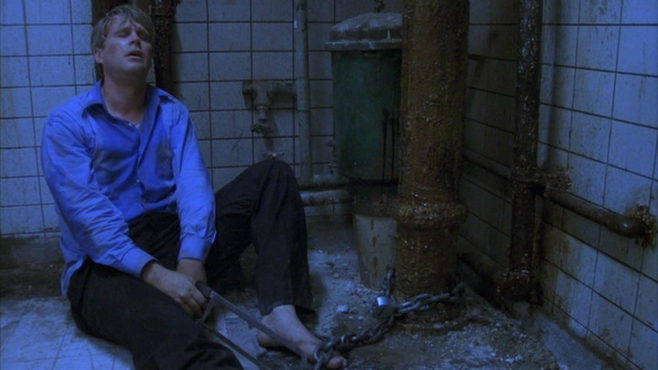
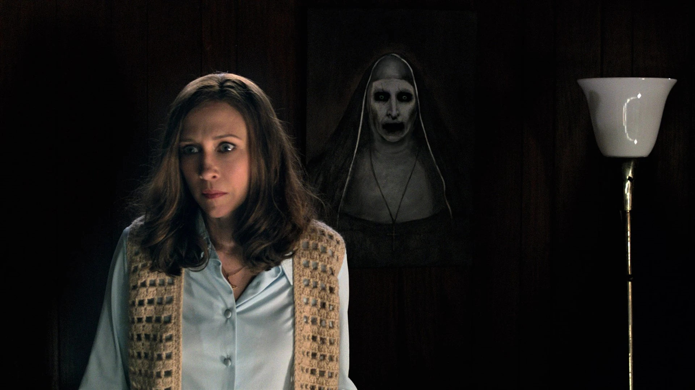
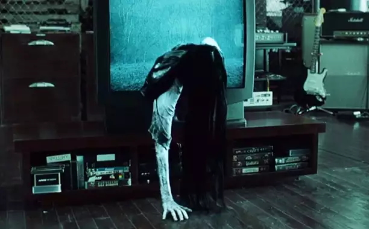

Películas más destacadas
A lo largo de la historia se han filmado infinidad de peliculas relacionadas al género del terror. Las hay de las mas variadas, desde espiritus hasta asesinos en serie y criaturas ficticias. Algunas con un terror mas explicito y otras que generan un terror psicológico, que te mantienen tenso de inicio a fin. Aquí les dejo una selección de las que, para mí, tienen una sabor especial. Recordemos que para gustos, peliculas...

The Shining (1980)
Psycho (1960)

The Exorcist (1973)

The Blair Witch Project (1999)

Jaws (1975)

The Sixth Sense (1999)

It (1990)

Saw (2004)

The Conjuring (2013)
The Grudge (2004)
